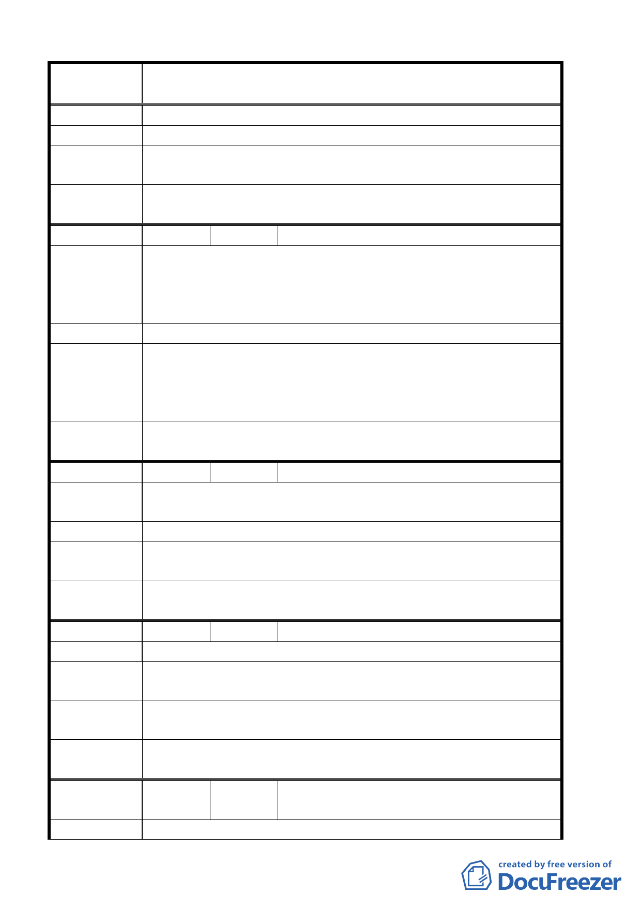

案 名 臺北市北投區都市計畫通盤檢討案（主要計畫）案
展局所訂之保護區變更為住宅區檢討原則。
建 議 辦 法 將該土地變更為住宅區
專 案小組 審 94.5.26 專案小組第 13 次審查會議：因不符合保護區變更為住
查 結 論 宅區之檢討原則，維持原計畫之保護區。
委員會議
決議
同意依專案小組審查結論辦理。
編 號 ２５ 陳情人 榮民總醫院
八十九號綠地保留地為本院院區內醫院用地市政府六十一年都
陳情理由
市計畫公告劃設為綠地用地前即為本院使用迄今院區土地不足
早已將該區域規劃為醫療用地共同體公園供員工及來賓使用，
請同意變更為醫療用地。
建 議 辦 法 院內未開闢之五米寬綠地請同意變更為醫療用地
93.10.14 專案小組第八次審查會議：同意榮民總醫院建議，未
專 案小組 審 開闢五米寬綠地變更為醫療用地。另為保留計畫原有之規劃精
查 結 論 神，併於案內規定榮民總醫院醫療用地及其西南側機關用地臨
接道路側應退縮無遮簷人行空間，其退縮部分得計入法定空地。
委員會議
決議
同意依專案小組審查結論辦理。
編 號 ２６ 陳情人 臺北市城市發展協會
陳情理由
臺北市承德路六、七段之道路公園路燈工程管理處將闢建十米
綠地，此案規劃年代已久已不符合現階段的需求。
建 議 辦 法 應重新檢討另提替代方案。
專 案小組 審 94.03.03 專案小組第 11 次專案審查會議，建議維持原都市計
查 結 論 畫案。
委員會議
決議
同意依專案小組審查結論辦理。
編 號 ２７ 陳情人 北投區長安里辦公處
陳情理由
建議辦法
建議將該里沿捷運新北投線大業路段（自中央北路一段二○六
號至育仁路口）之住宅區變更為商業區。
專 案小組 審 94.03.03 專案小組第 11 次專案審查會議，建議維持原都市計
查 結 論 畫案。
委員會議
決議
維持原都市計畫案。有關該項建議請市府另案研究處理。
編
號 ２８
陳情人
李重耀建築師、周明雄、李簡合、白宮山
莊住戶管理委員會
陳 情 理 由 陳情人所有位於台北市北投區大屯段三小段 209、210、211、
第 18 頁，共 49 頁